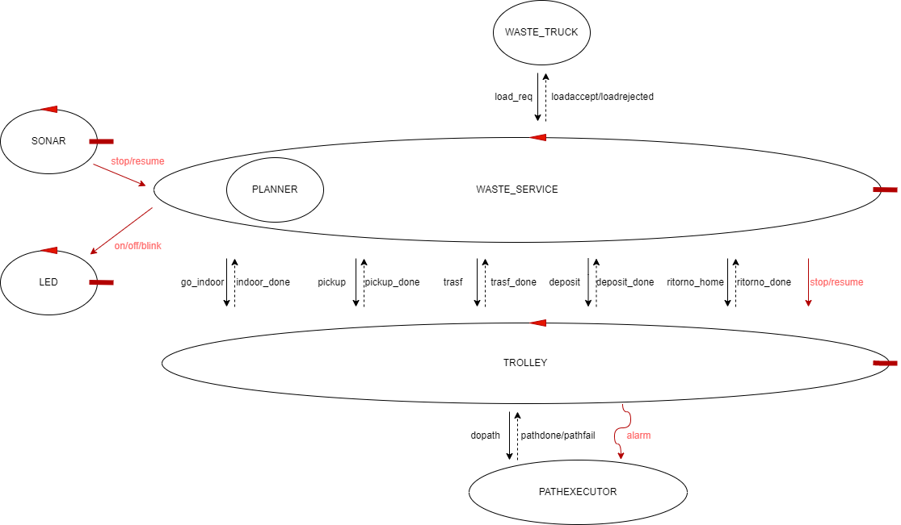

Introduction
Progetto finale del corso di studio Ingegneria dei sistemi software M, Laurea Magistrale Università di Bologna. (SPRINT 2)
Sprint 1 results
Di seguito é riportato il risultato finale ottenuto al termine dello Sprint 1:

CODICE: modello eseguibile
TEST: Test plan
CODICE: modello eseguibile
TEST: Test plan
Requirements
Per la parte di requisiti si veda la sezione Requirement dello Sprint 1
Requirement analysis
PUNTI APERTI:
- il Service-manager é l'utilizzatore del SONAR e lo utilizza per bloccare il robot?
Sí, viene usato come una sorta di pulsante. - Il LED é accesso quando il TROLLEY é STOPPED, inteso quando fermato a causa del SONAR oppure anche davanti ai box per scaricare?
Per stato STOPPED si intende quando il TROLLEY é fermo a causa del SONAR - Il WASTE_SERVICE deve pilotare il LED o puó delegare un'altra entitá?
Il WASTE_SERVICE dá il comando questo poi puó essere delegato ad un'altra entitá - Lo stato di LED e TROLLEY é un'informazione di fondamentale importanza per l'applicazione oppure ci possono essere delle imprecisioni?
Non sono informazioni fondamentali per il sistema, possono esserci delle imprecisioni - É possibile introdurre un'entitá aggiuntiva per processare i dati provenienti dal SONAR?
L'importante é che ci siano le entitá richieste dai requisiti, delle entitá aggiuntive non sono un problema - Come trattare lo stato STOPPED del TROLLEY (fermo subito oppure finisce azione e si ferma)?
Il TROLLEY si deve fermare subito
Per le considerazioni fatte su Requisiti funzionali e Requisiti non funzionali si vedano i paragrafi dedicati nello Sprint 1
COMPONENTI A DISPOSIZIONE
Viene fortinto il software per l'utilizzo del SONAR e del LED.PROBLEMATICHE RF2
In questo Sprint ci concentreremo solamente sul RF2.STATO TROLLEY
Chi é il responsabile dello stato del TROLLEY (HOME, Movimento, Stopped).TRATTAMENTO DISTANZA
Chi é il responsabile del processamento dei valori di distanza rilevati del SONAR.COMANDO STOP/RESUME
Il TROLLEY deve ricevere un comando di stop/resume.COMANDO ON/OFF/BLINK
Il WASTE_SERVICE deve inviare un comando on/off/blink al LED.
Problem analysis
PROBLEMATICHE RF2 EVIDENZIATE DURANTE L'ANALISI DEI REQUISITI
STATO TROLLEY
Attualmente, nel modello realizzato nello Sprint 1, lo stato del TROLLEY é noto a due entitá, ossia il TROLLEY stesso e il WASTE_SERVICE. Con l'introduzione del RF2, peró bisogna considerare un nuovo stato in cui il TROLLEY si puó trovare, lo stato STOPPED. La problematica che sorge é chi é a conoscenza dello stato reale del TROLLEY e quindi chi andare ad interrogare per conoscerlo. In particolare:- TROLLEY: é sempre a conoscenza dello stato in cui si trova. D'altro canto peró in questo caso il TROLLEY deve comunicare il suo stato agli interessati (LED). In base a come viene effettuata la comunicazione il TROLLEY puó perdere la caratteristica di essere un attuatore e puó non essere rispettato il requisito che il WASTE_SERVICE deve pilotare il LED ("Durante questa attività il WasteService fa lampeggiare il Led.").
- WASTE_SERVICE: nel modello attuale esso puó inferire lo stato in cui si trova il TROLLEY in base allo stato in cui esso stesso si trova. Aggiungendo lo stato STOPPED peró, é necessario che il WASTE_SERVICE riceva le informazioni di quando fermare e riavviare il TROLLEY sulla base delle distanze rilevate dal SONAR.
CONCLUSIONI
Visto che il WASTE_SERVICE é il responsabile del comportamento che il LED deve assumenre in ogni istante, é consigliato che anche le informazioni che riguardono lo stato del TROLLEY siano mantenute e aggiornate dal WASTE_SERVICE stesso. In questo modo il TROLLEY non deve neanche occuparsi della gestione del LED, mantenendo la caratteristica di attuatore.TRATTAMENTO DISTANZA
Abbiamo a disposizione diverse implementazioni del SONAR fornite dal committente (Sonar e SonarObservable ). Dovendo lavorare con un flusso continuo di informazioni (sequenza di distanze rilevate) non è consigliato interagire con il SONAR mediante dispatch oppure con uno schema request-response.Perció si consiglia l'utilizzo del SonarObservable che emette eventi, i quali possono essere rilevanti per entitá diverse:
- TROLLEY:
- PRO: il TROLLEY gestisce autonomamente il proprio stato in base alle indicazioni del SONAR.
- CONTRO: viene complicata la struttura del TROLLEY, in quanto dovrá processare gli eventi emessi dal SONAR, perdendo cosí la caratteristica di attuatore.
- WASTE_SERVICE:
- PRO: il WASTE_SERVICE diventa il fulcro del sistema in quanto si incarica di processare tutte le informazioni provenienti dagli altri componenti
- CONTRO: si aggiunge un ulteriore compito al WASTE_SERVICE complicando la sua realizzazione. Inoltre il WASTE_SERVICE deve anche comunicare con il TROLLEY per effettuare l'eventuale sospensione e riavvio.
- ENTITÁ DEDICATA : con entitá dedicata si intende sia una nuova componente ma anche
una pipeline di attori che filtra il contenuto degli eventi emessi dal SONAR
- PRO: si utilizza un'entitá dedicata per processare le informazioni provenienti dal SONAR e comunicarle solo quando sono rilevanti agli interessati sotto forma di dispatch, evento o request-response (allarme), andando a soddisfare il principio di "Singola Responasbilitá" e facilitando la realizzazione del sistema, visto che riduciamo i compiti del WASTE_SERVICE.
- CONTRO: si aggiunge un'ulteriore entitá .
CONCLUSIONI
In caso di entitá dedicata, la comunicazione delle informazioni rilevanti é consigliato che avvenga mediante un dispatch in modo tale da assicurare la ricezione del messaggio e riducendo al minimo il numero di interazioni.COMANDO STOP/RESUME
Il TROLLEY in base alla distanza rilevata dal SONAR deve eventualmente mutare il suo stato (Movimento -> Stopped e viceversa).La comunicazione di ció é influenzata dalle scelte che verranno fatte nelle problematiche affrontate in precedenza:
- GESTITO DAL TROLLEY:
Il TROLLEY riceve gli eventi emessi dal SONAR direttamente (TRATTAMENTO DISTANZA punto 1) e in base ad essi commuta il suo stato (comando interno).- PRO: disccoppiamento, il TROLLEY gestisce autonomamente il proprio stato in base alle indicazioni ricevute.
- CONTRO: viene complicata la struttura del TROLLEY, in quanto esso deve essere sensibile agli eventi del SONAR ed inoltre deve possedere logica di business, perdendo cosí la caratteristica di attuatore.
- COMANDO INVIATO DA ENTITÁ TERZA:
L'entitá terza processa le informazioni provenienti dal SONAR e in base ad esse comunica direttamente al TROLLEY o tramite il WASTE_SERVICE il comando da effettuare attraverso una delle tre forme di comunicazioni affrontate fino ad ora.- PRO: si utilizza un'entitá dedicata per processare le informazioni provenienti dal SONAR e comunicarle solo quando sono rilevanti, andando a soddisfare il principio di "Singola Responasbilitá".
- CONTRO: si aggiunge un'ulteriore entitá.
- COMANDO INVIATO DAL WASTE_SERVICE:
Il WASTE_SERVICE riceve gli eventi direttamente dal SONAR o l'allarme dall'entitá terza e comunica al TROLLEY il comando da effettuare mediante una delle tre forme (dispatch, evento, request-response) viste fino ad ora. I PRO e i CONTRO delle tre forme non verranno analizzate nel dettaglio in quanto giá studiate ampiamente nello Sprint precedente.- PRO: il WASTE_SERVICE diventa il controllore dell'intero sistema essendo a conoscenza dello stato di ogni componente.
- CONTRO: si aggiunge un ulteriore compito al WASTE_SERVICE complicando la sua realizzazione
CONCLUSIONI
Visto che non vi sono particolari richieste, si sconsiglia di non far gestire tale comando direttamente al TROLLEY.DOVE MEMORIZZARE LO STATO IN CUI SI STOPPA IL TROLLEY
Visto che con l'aggiunta del RF2 é necessario gestire la fermata e la ripartenza del TROLLEY, é fondamentale essere a conoscenza dello stato in cui si trovava il TROLLEY prima di ricevere il comando di stop, per garantire la corretta ripartenza ed eseguire la giusta sequenza di operazioni che compone un'azione di deposito (Pickup, Trasferimento, Deposito).Innanzitutto bisogna distinguere due tipologie di stati in cui si puó trovare il TROLLEY:
- Stato in cui sta eseguendo un MOVIMENTO: Pickup (considerando solo lo spostamento all'INDOOR [leggere dopo]), Trasferimento e Ritorno_home.
- Stato STATICI: Home, Pickup (considerando la parte di prelievo) e Deposito.
In uno stato "di MOVIMENTO" vi é la necessitá di comunicare con il pathexecutor di interrompere le azioni che stata svolegendo e di memorizzare quelle rimanenti per effettuarle nella fase di resume. Questa complicazione invece non é presente negli stati STATICI dove é sufficiente "ricordarsi", in fase di resume, solo lo stato in cui ci trovavamo.
In base a quanto appena detto é fondamentale, in fase di resume, sapere lo stato in cui siamo stati bloccati. Ció puó essere fatto da due entitá differenti:
- TROLLEY:
- PRO: vengono ridotti i compiti del WASTE_SERVICE in quanto non deve memorizzare lo stato in cui si trova il TROLLEY e si occupa solo di effettuare il resume.
- CONTRO: con alte probabilitá il WASTE_SERVICE deve sapere in tutti i modi lo stato in cui si trova il TROLLEY e quindi memorizzarsi comunque questa informazione
- WASTE_SERVICE:
- PRO: deve conoscere lo stato del TROLLEY per regolare il comportamento degli altri componenti (LED)
- CONTRO: aumenta il carico di lavoro del WASTE_SERVICE ed é necessario, in fase di resume, comunicarlo al TROLLEY
COME MEMORIZZARE LO STATO IN CUI SI STOPPA IL TROLLEY
L'informazione riguardante lo stato in cui si trova il TROLLEY puó essere memorizzata in vari modi:- DUPLICAZIONE DEGLI STATI PRESENTI: per ogni stato presente nella FSM viene introdotto il corrispondente stato STOPPED, in questo modo, all'arrivo di una resume, é semplice stabilire da quale stato ripartire.
- UTILIZZO DI UNA VARIABILE: viene usata una variabile interna per memorizzare lo stato in cui é avvenuto lo stop, in questo modo si evita la prolificazione di stati, "alleggerendo" la struttura della FSM.
- INTERRUPT (link): modellare per il linguaggio QAK un meccanismo di chiamata a procedura, in maniera tale da memorizzarsi lo stato in cui ci trovavamo prima del comando di stop e poterlo ripristinare correttamente dopo l'arrivo di una resume.
CONCLUSIONI
La soluzione piú "elegante", in quanto riduce l'abstaction gap, sarebbe quella di utilizzare gli interrupt, ma questa richiederebbe molto tempo per realizzarla.Perció si consiglia di gestire lo stato lato WASTE_SERVICE, in quanto deve comunque mantenerlo per pilotare il LED, mentre per quanto concerne la modalitá di implementazione si lascia potere decisionale al progettista.
DA QUALE STATO RIAVVIARE IL TROLLEY
All'arrivo del comando resume vi possono essere due alternative riguardanti lo stato da cui ripartire:- Stato ATTUALE: si riparte dallo stato in cui si trovava il TROLLEY al momento dello stop, in questo caso bisogna fare attenzione alle azioni da compiere al momento della resume.
- Stato SUCCESSIVO: al momento della resume vengono effettuate le "azioni mancanti" e si riparte dallo stato successivo, é necessario fare attenzione alle risposte che devono essere inviate al WASTE_SERVICE in fase di riavvio visto che la comunucazione tra queste due entitá é stata realizzata con uno schema request-response.
CONCLUSIONI
Non essendoci richieste specifiche dal committente, si lascia libertá di scelta al progettista, optando per la soluzione piú facile e rapida da realizzare.COMANDO ON/OFF/BLINK
Il LED deve ricevere un comando per commutare il proprio stato, esso puó essere inviato da diverse entitá che devono essere a conoscenza dello stato del TROLLEY in quanto il comportamento del LED dipende da esso. I casi possono essere i seguenti:- LED pilotato dal TROLLEY:
- PRO: il TROLLEY conosce sempre il suo stato, non é necessario condividerlo con nessun altra entitá.
- CONTRO: il TROLLEY non é piú un attuatore e si rischia di non soddisfare il requisito dato dal commitente ("Durante questa attività il WasteService fa lampeggiare il Led.").
- LED pilotato dal WASTE_SERVICE:
- PRO: il TROLLEY resta un attuatore e il WASTE_SERVICE funge da controller dell'intero sistema.
- CONTRO: il WASTE_SERVICE deve mantenere lo stato del TROLLEY anche quando esso é nello stato STOPPED.
CONCLUSIONI
Per rispettare i requisiti dati dal committente é necessario che il WASTE_SERVICE sia il responsabile del comportamento del LED e quindi sia esso a prendere le decisioni che lo riguardano (invio del comando).SOLUZIONE PROPOSTA
Dopo l'analisi appena effettuata proponiamo una possibile soluzione, che a nostro parere incorpora la maggior parte dei vantaggi:L'obiettivo é quello di modellare il WASTE_SERVICE come controllore del sistema. Esso riceve dal SONAR il comando di stop/resume, in modo tale da poter memorizzare lo stato in cui trova il TROLLEY prima dello stop.
Successivamente il WASTE_SERVICE invierá il comando appena ricevuto dal SONAR al TROLLEY, il quale, se si trova in uno stato di movimento, dovrá emettere l'evento alarm per notificare lo stop anche al pathexecutor. Oltre al comando stop/resume, il WASTE_SERVICE dovrá anche pilotare il comportamento del LED tramite l'invio del comando on/off/blink.
Infine viene introdotta un'ulteriore request-response per gestire l'introduzione del nuovo stato "go_indoor" e il payload del comando resume che arriva TROLLEY conterrá l'indicazione dello stato da cui ripartire.
ARCHITETTURA LOGICA
La soluzione che quindi proponiamo presenta la seguente architettura logica:CODICE: Contesto WASTE_SERVICE e TROLLEY
Contesto Raspberry
TEST: Test WASTE_SERVICE
Test LED
Non é necessario effettuare test sul SONAR in quanto si utilizza il software fornito dal committente.

Test plans
In questo Sprint sono state realizzate due test unit per verificare il corretto funzionamento delle entitá che
compongono il sistema, in particolare:
- Test LED: in questo caso viene sfruttatto il fatto che il LED sia una risorsa COAP. Infatti viene introdotto un osservatore COAP che monitora lo stato del LED, sostanzialmente viene inviato un comando al LED e si verifica che lo stato in cui si trova sia quello corretto.
- Test WASTE_SERVICE: in questa test unit si verifica il corretto funzionamento del WASTE_SERVICE, che funge da controller del sistema. Vengono sfruttati due osservatori COAP per monitorare rispettivamente lo stato del TROLLEY e del LED. Viene simulato un comando del SONAR di stop/resume e si va a verificare che le due entitá si trovino nello stato atteso.
Project
Testing
Deployment
Maintenance
Davide Filoni email: davide.filoni2@studio.unibo.it
Fabio Scagliarini : fabio.scagliarini@studio.unibo.it
Filippo Comastri : filippo.comastri2@studio.unibo.it
Link git
Fabio Scagliarini : fabio.scagliarini@studio.unibo.it
Filippo Comastri : filippo.comastri2@studio.unibo.it
Link git